Front, late afternoon. The lounge's 14 ft window under its metal awning on the left, the front porch on the door axis with its standing-seam roof, and the garage with its two wall dormers on the 10:12 side gable. Styled after the exterior photos: board-and-batten, charcoal shingles, white columns, brick base.
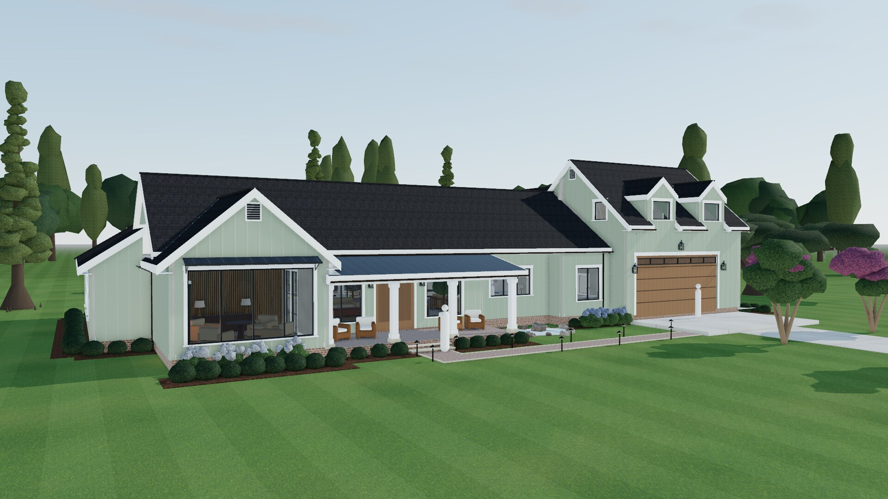
Front, sage option. The same house with the sage siding from the cottage photos, white trim and columns unchanged. Switch it in the Sun panel.
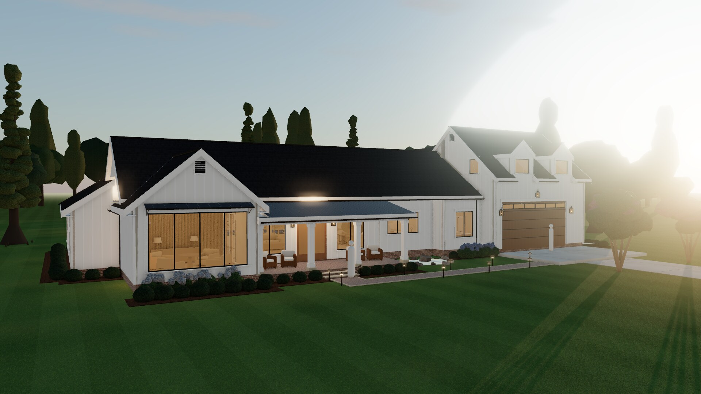
Front at dusk. Same view at 7:30 with the lamps, the gas lanterns and the path lights on.
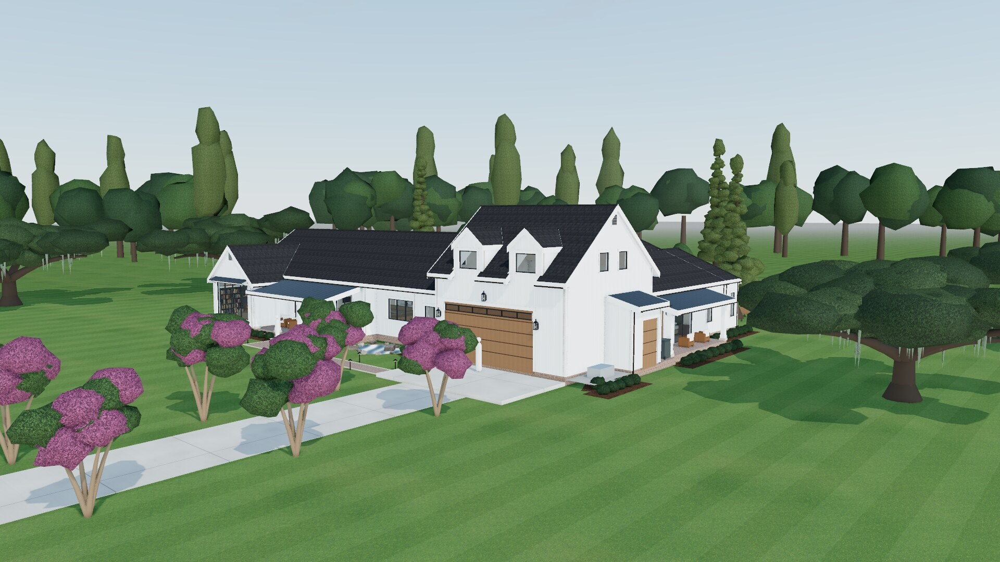
From the drive. The garage end, the side roll-up for the mower, the generator pad, the side porch and the crape myrtles along the drive.
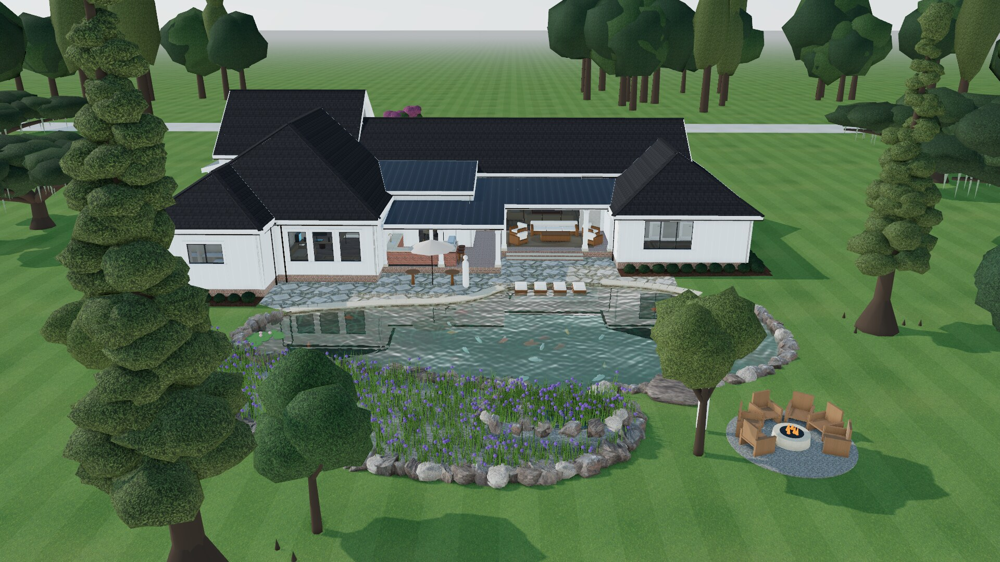
Over the pond. The long pond across the back, with the terrace and coping, the sun ledge off the porch, the koi, the wetland and the fire pit.
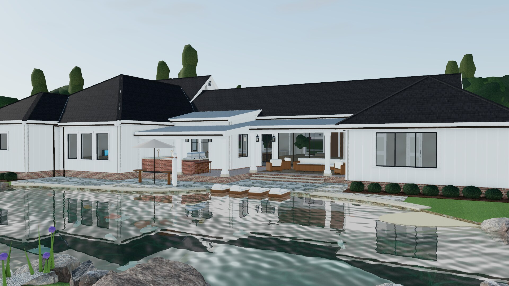
From across the water. Looking back at the house from near the fire pit.
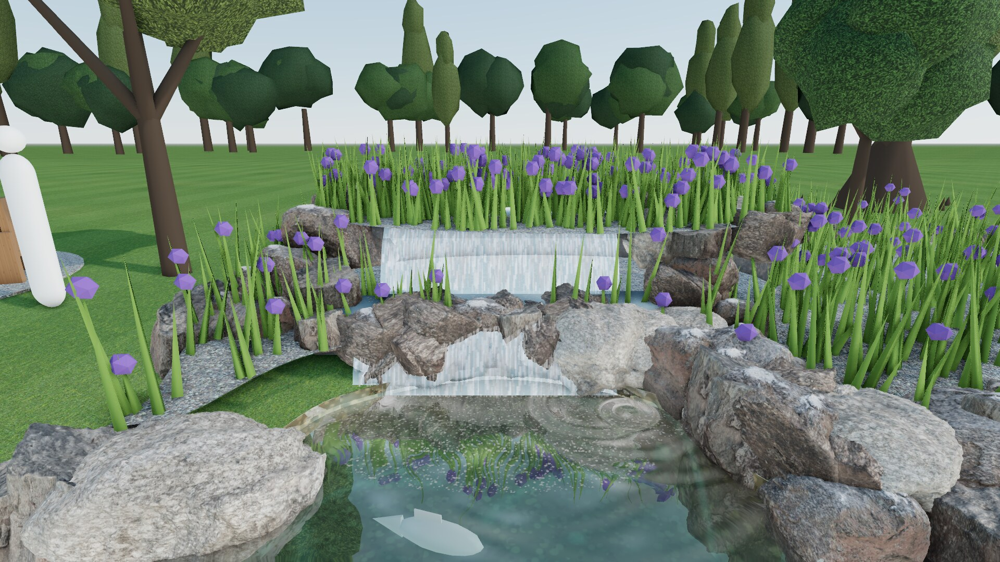
The falls. The two-step cascade on the front-door axis: the header pool pours over the upper lip onto a rock shelf, then into the pond.
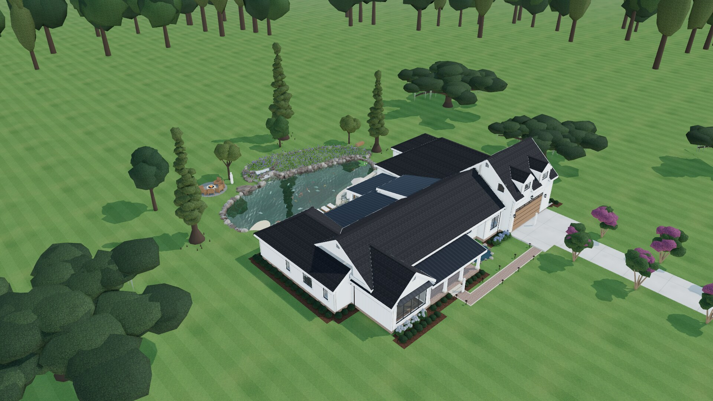
Aerial. The whole site, with the draft L roof: the main gable, the hipped wings and the garage side gable. The tree line, drive length and street are placeholders.
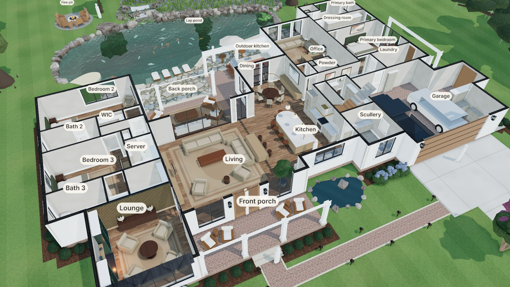
Dollhouse. Roof off, walls cut at 8½ ft, looking over the great room toward the pond.
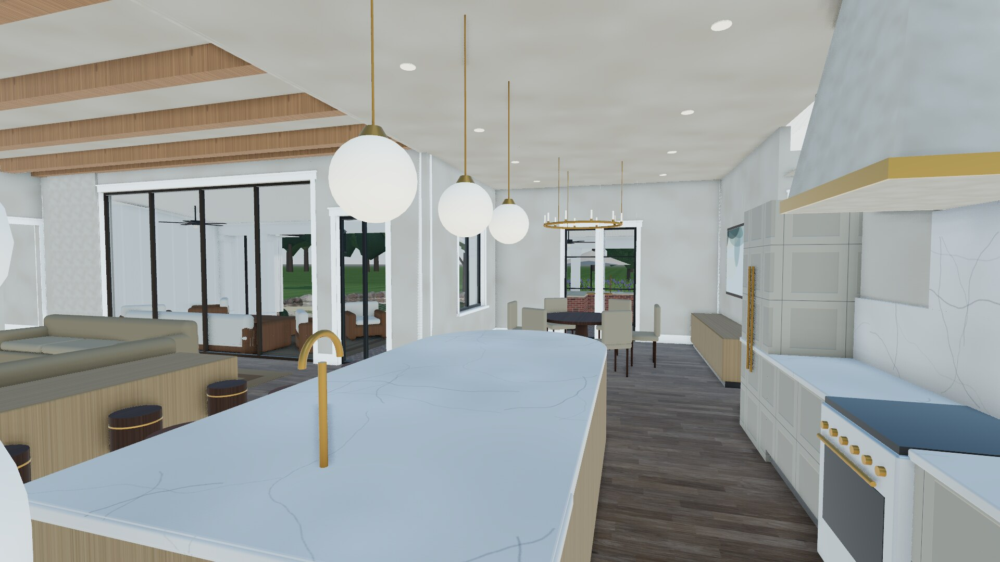
Kitchen. The white oak island under three brass globe pendants, the plaster hood and marble slab on the range wall, and the dining room beyond.
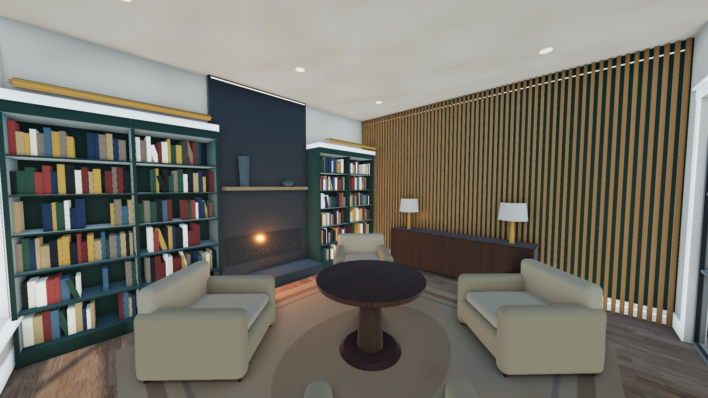
Lounge. The green lacquer library flanking a linear gas fireplace in honed black granite, and the oak slat feature wall toward the bedrooms.
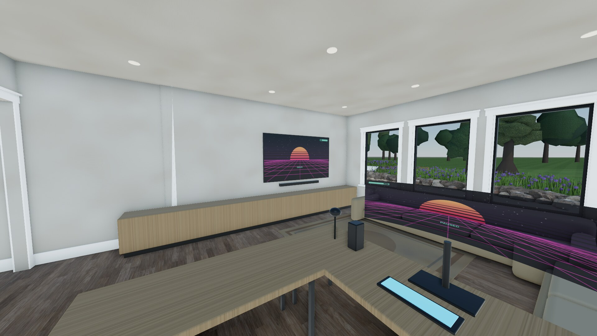
Office. The 100 in OLED on the left wall, the L-shaped couch against the desk and the window wall, and the gaming rig on the oak desk.